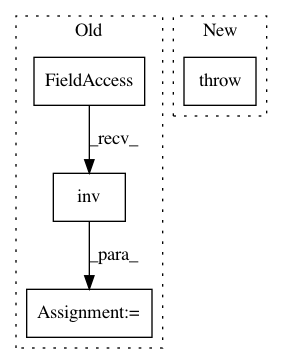

ce597a0b10658043b6d6d8ffed3fff4a6ebbc1ea,stellargraph/layer/ppnp.py,PPNP,__init__,#PPNP#Any#Any#Any#Any#Any#Any#Any#,51
Before Change
Aadj = generator.Aadj.todense()
// propagation matrix is non-sparse : create and store at initalization to save time
propogation_matrix = self.transport_probability * np.linalg.inv(np.eye(Aadj.shape[0]) -
(1 - self.transport_probability) * Aadj)
propogation_matrix = tf.convert_to_tensor(propogation_matrix, tf.float32)
self._layers.append(Dropout(self.dropout))
self._layers.append(Lambda(lambda x: K.dot(propogation_matrix, x[0, :])))
After Change
raise TypeError("Generator should be a instance of FullBatchNodeGenerator")
if not len(layer_sizes) == len(activations):
raise ValueError("The number of layers should equal the number of activations")
self.layer_sizes = layer_sizes
self.transport_probability = transport_probability
self.activations = activations
In pattern: SUPERPATTERN
Frequency: 3
Non-data size: 4
Instances
Project Name: stellargraph/stellargraph
Commit Name: ce597a0b10658043b6d6d8ffed3fff4a6ebbc1ea
Time: 2019-09-26
Author: u5824685@anu.edu.au
File Name: stellargraph/layer/ppnp.py
Class Name: PPNP
Method Name: __init__
Project Name: geomstats/geomstats
Commit Name: b4cbde4ef4fc79ecc215815732abf03d1a4936ed
Time: 2020-02-17
Author: yann.cabanes@u-bordeaux.fr
File Name: geomstats/geometry/riemannian_metric.py
Class Name: RiemannianMetric
Method Name: inner_product_inverse_matrix
Project Name: nipy/dipy
Commit Name: 033e13feee93176d1f27f3b290249d6a52a0ba99
Time: 2015-07-16
Author: jomaroceguedag@gmail.com
File Name: dipy/align/imaffine.py
Class Name: MIMetric
Method Name: _update